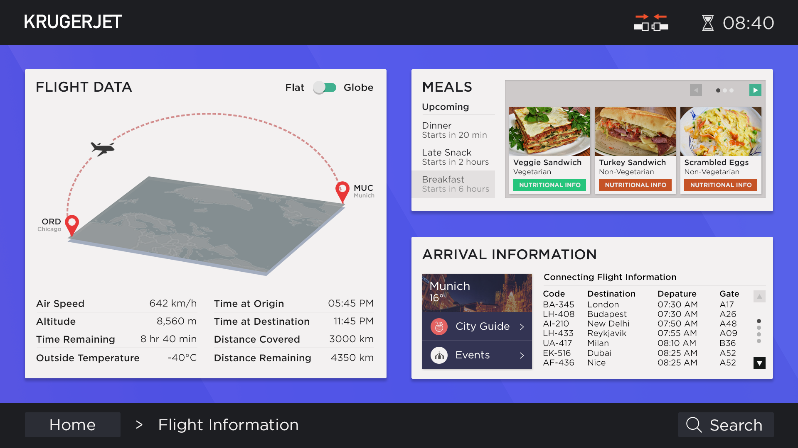

Introduction
Inflight entertainment is an integral part of the travel experience on long haul flights, for passengers of all ages, which presents a critical requirement for the system to be designed while prioritizing the needs of users. If the interface is clunky or difficult to navigate, a user might get frustrated and choose the lucrative option of sleeping instead, which doesn't do justice to both the installation cost (around $3 million per plane) and extra fuel required due to the weight of these screens.
This project aims to understand some of the shortcomings across inflight entertainment systems from different airlines, and address these shortcomings, with consideration to the constraints and limitations on a system that operates on an airplane. I do acknowledge that my user research is limited to my observations and to semi-structured interviews conducted with friends, and designs of some airlines' inflight entertainment system may address some of the issues I present.
Observations and Common Design Limitations
- Resistive Touchscreen
The resistive touchscreen, though a hardware issue, has severe implications on the IFE system's interface. The resistive screen is less responsive to lighter touches than, for example capacitive screens, which make scrolling and other interactions such as a pinch-to-zoom seem unintuitive and disjoint. On my flight in January from Amsterdam to Chicago, I observed a user seated next to my try to use the flight path screen, where the only option to interact with the screen was dragging across or pinching the globe on the screen. The user under my inconspicuous ethnography struggled to move the globe to her desired level of zoom due to the resistive screen's lack of response to the pinch gesture, and eventually gave up. - The Flight Information Screen
The flight information screen comes under my scrutiny because it rarely contains information that the user truly cares about. The process of human-centered design is all about developing a deep empathy for the user, which is why displaying information about when the next meal is going to be served, or information about the user's next flight is definitely more useful. - Integration with devices and services
With the advent of inflight WiFi, there is scope for greater levels of interaction between personal devices, which the current generation of inflight entertainment systems overlook.
Furthermore, many IFE systems remain incapable of multi-tasking with core services. For instance, with the Delta IFE system, it is impossible to play games while listening to music. - Searching for content
Far too many IFE systems lack the simple option of searching for content. If I have a particular movie or music album in mind, I should be able to find it without having to navigate around a vast library grouped by alphabet sets. From my user research, only British Airways and the new Delta IFE system provided search options on high-level screens such as the home screen. - Screen Locking
Another big design problem I found on my KLM flight was that the remote was stowed inside the armrest. While sleeping, I accidentally pressed a button on the remote while moving in my seat that caused the overhead light to turn on, which infuriated the passengers sitting next to me. Even when watching movies, there is no way to lock the remote to prevent unintentional button presses. The remote is often moved to a spot below the screen, but for the scope of this project, all limitations will be addressed through changes in the interface.

Delta's flight information screen just shows technical information and nothing about meals or arrival
(Source: https://medium.com/@erolahmed/the-new-delta-in-flight-entertainment-ui-6a91457d2663)

Lufthansa's inflight entertainment fails to provide users with a high-level option to search for content
(Source: http://www.s-v.de/detail-image.php?id=744)